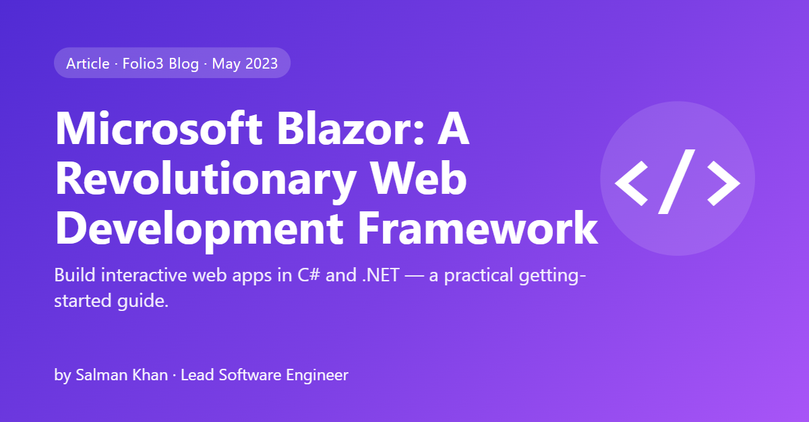

What I do
The work I'm trusted with, end to end.
Platform architecture
Clean Architecture, CQRS, multi-tenancy and reliable data design on .NET 10, EF Core, SQL Server and PostgreSQL.
Enterprise integrations
Dynamics 365 and AX, Epic FHIR/HL7, DICOM, Shopify, message queues and background workers.
Quality at scale
End-to-end business-flow suites, concurrency and architecture tests, CI checks and pipelines.
AI-assisted engineering
Claude Code workflows with guardrails, auditor agents and human approval gates.
Selected work
Client platforms I've led or owned at Folio3.
Agri-WMS Production & Quality Platform
Vann Bros (a US almond handler/huller client). Two live .NET 10 systems with two-way Dynamics 365 integration and extensive automated test coverage; first phase live.
Nbryo IVF Platform
Multi-tenant, multi-lab bovine IVF platform on .NET 10 and PostgreSQL — tenant isolation, lab-scoped permissions, embryo production and inventory.
AgriBeef CattlePro ERP
AgriBeef (a US agri-business client). Blazor ERP suite: Harvest Schedule, Commodities, Lotting, Live Cattle, Hedging, reporting and a Shopify/3PL operations hub.
Epic / PACS Integration
FHIR R4 and HL7 v2 integration between a DICOM PACS and Epic, with clinical-note write-back.
"By the Book" AI Software Factory
Multi-agent factory built for Folio3's AI Factory Championship: referee, auditor agents, fail-closed hooks and human gates.
Enterprise Reporting System
Blazor Server portal centralising Crystal and SSRS reports with metadata-driven parameters and versioning.
Writing
First published on the Folio3 blog.

Microsoft Blazor: A Revolutionary Web Development Framework
What Blazor is, how its server and WebAssembly models compare, who should use it, and a step-by-step guide to getting started.
Open source
Small, focused libraries on my GitHub.
WebSocket Market Feed Client
Serve live market data through your own API: subscribes on first request, merges price deltas into cached snapshots, reconnects on its own and drops unused subscriptions. Tested end to end against a real WebSocket server.
Experience
At Folio3 since 2020, growing from engineer to lead.
- Backend lead on Vann Bros and Nbryo platforms; module owner on AgriBeef CattlePro.
- Built "By the Book" and delivered the internal Claude Code training.
- Led the Enterprise Reporting System; built the first CattlePro Blazor apps; JOOR connectors.
- Animal traceability, SSRS/Crystal reporting, Cactus Feeders, EcoDocs for Superior Farms and Hanor Farms.
- TPL Trakker (Assistant Manager, Technology & Innovation), Dig8Labs, OneMindSoft.
Skills
What I use day to day.
Recognition
- ★Divisional Stars Award, AgTech — Folio3, Q3 2026
- ★Divisional Star, AgTech — Folio3, Q4 2022